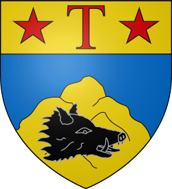
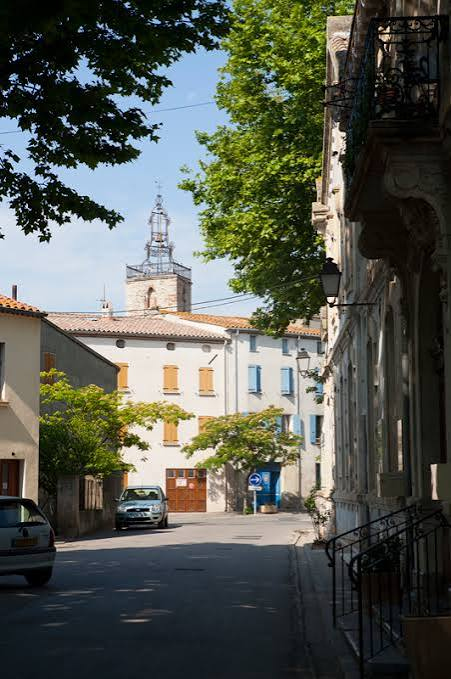

TuchanVignobles et forteresse d’Aguilar


⟹ Villes & Villages Emblématiques ⟸

Le territoire de Tuchan, dominé par le mont Tauch et ouvert vers les hautes Corbières, est occupé depuis la Préhistoire. Des découvertes attribuées au Néolithique et à l’âge du Bronze témoignent de communautés installées dans cette plaine abritée. À l’époque romaine, des établissements agricoles de type villa exploitent les terres ; sépultures et vestiges indiquent une continuité d’occupation durant l’Antiquité tardive puis la période wisigothique. Cette ancienneté s’explique par une position favorable entre plaine littorale, vallées des Corbières et passages vers le Roussillon.
Au Moyen Âge, Tuchan se situe dans un espace de contacts entre pouvoirs occitans et catalans. Le château d’Aguilar, dressé sur une hauteur voisine, est d’abord lié aux comtes catalans, puis à la maison de Carcassonne à la fin du XIe siècle. À partir du XIIe siècle, il appartient à la puissante famille de Termes. Le village et son terroir évoluent ainsi dans l’orbite de l’une des grandes seigneuries des Corbières.
La croisade contre les Albigeois bouleverse cet équilibre. Olivier de Termes, fils de Raymond de Termes, devient l’une des grandes figures de la résistance méridionale. Dépossédé de Termes, il utilise Aguilar comme résidence et point d’appui, notamment lors des tentatives de reconquête menées autour de Raymond Trencavel. Après des périodes de restitution et de reprise, Olivier finit par céder définitivement Aguilar au roi de France en 1261.

Le traité de Corbeil de 1258 a entre-temps donné à cette zone une nouvelle fonction : les Corbières deviennent une frontière entre le royaume de France et la couronne d’Aragon. Aguilar est agrandi et renforcé par le pouvoir royal et s’intègre au réseau des forteresses chargées de défendre la frontière méridionale de Carcassonne. Cette fonction stratégique marque durablement Tuchan, dont le terroir devient un espace de garnisons, de passages militaires et de surveillance.
À la fin du XVe et au XVIe siècle, la frontière reste particulièrement instable. Après l’union dynastique de l’Aragon et de la Castille, les affrontements franco-espagnols se multiplient. Tuchan subit des incursions, des réquisitions et des destructions. Les sources locales rappellent notamment l’occupation du village par les Espagnols en 1525, la capture d’habitants et leur libération contre rançon, puis un nouveau sac en 1543. Le plan resserré du vieux bourg et les traces de fortification témoignent de ces siècles d’insécurité.
Le traité des Pyrénées de 1659 déplace la frontière vers le sud après l’annexion du Roussillon par la France. Aguilar perd alors l’essentiel de son intérêt militaire et est progressivement abandonné. Pour Tuchan, cette nouvelle situation met fin à une longue histoire de place frontalière et permet de recentrer l’économie sur les ressources du terroir. Le château, devenu ruine, reste cependant le symbole majeur de cette époque.
La Révolution réorganise profondément le territoire communal. En 1790, plusieurs anciennes communautés et possessions voisines, dont Domneuve, Nouvelles, Notre-Dame-de-Faste, Ségure et l’ancienne châtellenie royale d’Aguilar, sont réunies à Tuchan. La commune moderne prend ainsi une ampleur territoriale qui rassemble des lieux autrefois distincts et chargés de leur propre histoire.
Aux XVIIIe et surtout XIXe siècles, la vigne s’impose progressivement comme la grande culture locale. Les sols caillouteux, le climat méditerranéen et les vents des Corbières favorisent une viticulture qui modèle le paysage. La population augmente fortement au XIXe siècle, avant les crises viticoles, le phylloxéra et l’exode rural. Au XXe siècle, caves coopératives, modernisation des pratiques et reconnaissance des terroirs des Corbières et de Fitou renouvellent cette économie.
Le château d’Aguilar est classé Monument historique en 1949. Depuis lors, campagnes de consolidation, fouilles, dégagements et actions de mise en valeur ont progressivement amélioré la compréhension du site. Il est aujourd’hui l’un des grands monuments fortifiés des Corbières et demeure indissociable de l’image de Tuchan.
L’histoire de Tuchan associe donc une très ancienne occupation humaine, l’influence des mondes catalan et languedocien, la mémoire de la croisade albigeoise, plusieurs siècles de frontière franco-aragonaise puis franco-espagnole, et enfin une puissante identité viticole. Peu de villages des Corbières illustrent aussi clairement le passage d’un territoire militaire de frontière à un terroir de vigne et de patrimoine.